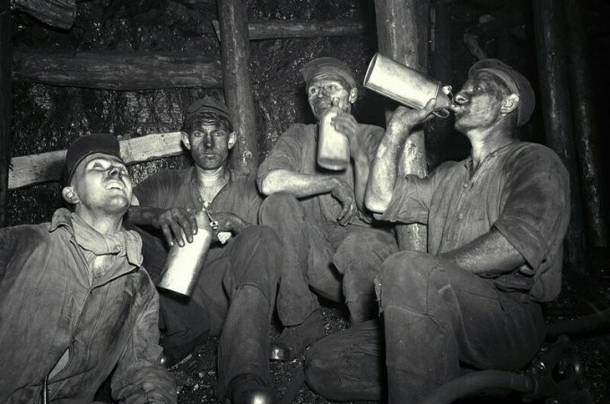

Dit is de Staatsmijn Emma. De mijn bevondt zich in Hoensbroek en begon met produceren in 1911.
De mijn had in totaal 4 schachten en diepste daarvan was 980 meter diep.
De mijn is in 1973 gestop met produceren en heeft in totaal 109.032.000 ton geproduceert.
Staatsmijn Emma is 10 jaar later gesloopt op 28 oktober 1983.
De sloop
Mijnwerkers

Op volgorde zitten de mijnwerkers Aernsbergen, Stuijts, Visser en Tonnaer in afdeling H van de Staatsmijn Emma